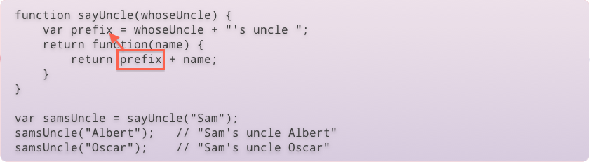
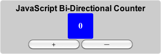
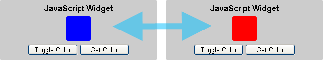

This presentation is an HTML5 website
Press → key to advance.
Zoom in/out: Ctrl or Command + +/-
Having issues seeing the presentation? Read the disclaimer
http://morlok.net/JavaScriptPresentation
To learn JavaScript fundamentals so that WLB developers can understand and build Cobalt-like JavaScript widgets.
Types are associated with values, not variables, determined at runtime.
To declare a variable, use the var keyword
var foo = "abc";
Assigning a value to a variable that is undefined will create a global. Global variables are properties of the global object (window). AVOID DOING THIS.
function makeGlobal() {
bar = "xyz";
alert(bar === window.bar); // true
}
makeGlobal();
alert(bar); // "xyz"
Variables have function scope instead of block scope as in C, C#, Java.
function foo(x) {
if( x > 2 ) {
var z = 1;
} else {
var z = 50;
}
return z;
}
It is generally better to declare the variable as you would in C# or Java for better readability, however.
You can determine the type of a variable by using the typeof keywords. Type names are returned as strings.
typeof "abc"; // "string"
Because JavaScript is weakly typed, you can reassign values of different types to the same variable.
var chi = "abc"; typeof chi; // "string" chi = true; typeof chi; // "boolean" chi = 123; typeof chi; // "number"
Other than built-in types, all values have a type of "object".
In JavaScript, some values are "falsy" meaning they are interpreted as false in logical expressions.
The fallowing are falsy values:
All other values are truthy.
Logical operators (and: &&, or: ||, not: !) work as expected using short-circuit evaluation.
|| returns the value of the first operand when it is truthy, otherwise it returns the value of the second operand.
&& returns the value of the second value when the first operand is truthy, otherwise the value of the first operand.
var a = 1 || 0; // 1 var b = 0 && 1; // 0 var c = null || "cat"; // "cat" var d = "cat" && "mouse"; // "mouse"
This technique can create shorthands for dealing with null checks we will see later.
JavaScript has two ways of checking if values are the same. == uses type coersion and === does not.
Type coersion means that the interpreter will attempt to make the values comparable by converting to the same type. Unfortunately, it can be difficult to predict the results.
0 == false // true 1 == true // true undefined == null // true 1 == "cat" // false true == "cat" // false
It is generally best to use the === operator as it requires the values and types to be the same, and produced more predictable results.
0 === false // false 1 === true // false undefined === null // false 1 === "cat" // false true === "cat" // false
For more information see the Mozilla Developer Center.
Unlike in Java/C#, uninitialized variables have a value undefined instead of null.
var foo; typeof foo; // "undefined"
null is a value you can assign to a variable to indicate it has no specific value.
foo = null
Since both values are falsy, you can use an if statement to check if a variable has a value:
if( foo ) {
// Has a value
}
Explicitly checking against undefined is important, however, when checking if a parameter to a function or property on an object exists, as it is possible that null was used for one of these values.
Functions are declared using the function keyword.
function foo() {
alert("hi");
}
function bar() {
return 5;
}
Invoke a function using C-style syntax:
foo(); bar();
Functions that do not return a value return the value undefined
typeof foo(); // "undefined" typeof bar(); // "number"
As JavaScript is a functional programming language, functions values and can be assigned to variables, passed to methods, and anything else that you can do with any other value.
When using functions as values, you frequently create anonymous functions, to do this just omit the name of the function from the previous declaration style.
var myFunction = function() {
alert("hi");
}
Once you have the function value, you can invoke it using the same syntax as you would normally.
myFunction();
Functions are often passed as parameters to other functions. The facilitates event handlers, callbacks, and the delegate programming style that is common in JavaScript.
$("#myElement").bind("click", function(event) {
// Do event handling logic
});
You can invoke functions immediately after creating them, this can be especially useful when creating closures, as we will see later.
function(message) {
alert(message);
}("hi");
This can also be useful when you want to do an inline recursive calculation.
var factorialOfTen = function factorial(val) {
if( val <= 1 ) {
return 1;
} else {
return val * factorial(val - 1);
}
}(10);
Function parameters are listed in the parenthases. The var keyword is not used for parameters.
function foo(param1, param2) {... }
Unlike Java or C#, passing a different number of parameters to a function than it declares is not an error, though it may cause an error later in the application logic. Parameters that are not passed when calling the function have a value of undefined.
function bar(a, b) {
alert(typeof a + ", " + typeof b);
}
bar(1, "cat"); // "numbder, string"
bar("dog"); // "string, undefined"
You cannot overload functions in JavaScript the way you can in Java or C#, but you can get similar behavior by having a single function inspect the type of the passed parameters and act differently.
Regardless of if you defined named parameters, you can access the parameters to a function using the arguments variable.
function add() {
var total = 0;
for(var i = 0; i < arguments.length; i++) {
total += arguments[i];
}
return total;
}
add(1, 2, 3); // 6
add(1, 3, 5, 7, 9); // 25
The arguments variable provides an array-like interface to the function arguments. This is also a way to check how many arguments were passed to a function. When possible, it is better to use only named parameters.
The term closure is just a fancy term for the idea that a function has access to the variables defined in the scope in which it was created.
function sayUncle(whoseUncle) {
var prefix = whoseUncle + "'s uncle ";
return function(name) {
return prefix + name;
}
}
var samsUncle = sayUncle("Sam");
samsUncle("Albert"); // "Sam's uncle Albert"
samsUncle("Oscar"); // "Sam's uncle Oscar"

Note that the prefix variable is referenced from the returned anonymous function. When that annonumous function is executed, that value still holds, even though the execution of the call to sayUncle has completed.
When creating closures you can access anything defined in the parent scope, (or any scope up the scope chain), including arguments to the parent functions.
function addN(n) {
return function(val) {
return n + val;
}
}
var add5 = addN(5);
add5(2); // 7
Note that you can also reference variables that are not defined when you are declaring the function, but are defined prior to the function being executed.
function addNPlus2(n) {
var tmp = function(val) {
return two + n + val;
}
var two = 2;
return tmp;
}
var add7 = addNPlus2(5);
add7(2); // 9
This is because the closure actually keeps a reference to an object like construct to the parent scope that changes as new variables are defined.
Because this type of code can be difficult to follow, avoid doing this when possible.
Create a function createCounter that returns a function that increments a counter and returns the value each time it is called.
Example:
var counter = createCounter(); alert(counter()); // 0 alert(counter()); // 1 alert(counter()); // 2
Implement your solution here: http://jsfiddle.net/S5gxK/3/
In JavaScript, the following are literals:
Everything else is an object.
Objects are mutable keyed collections. Numbers, strings and booleans are object-like in that they have methods, but they are not mutable.*
Functions are objects as well. This means that functions can have properties and methods, as strange as that sounds.
* JavaScript: The Good Parts by Douglas Crockford
Two ways to create objects:
To creat object literals, use the following notation:
var myObject = {
property1: "xyz",
"property2": 123
};
Note that object properties may optionally quoted (required if using a reserved keyword, spaces, etc.). The values for the property may be any value in JavaScript. The definitions of each property are separated by commas.
Because object literals are just expressions, you may nest them to create entire object trees.
var nested = {
id: 321,
otherObject: {
a: 1,
b: 2
}
}
Notice the similarity to the JSON data format. Hence, JavaScript Object Notation.
Properties in objects can be accessed a dotted notation as in Java/C#, or using a bracket notation similar to associative arrays.
var myObject = { ... };
myObject.foo = "something";
myObject["foo"] // "something"
delete myObject.foo;
myObject["foo"] // undefined
myObject["bar"] = "something else";
myObject.bar // "something else"
delete myObject["bar"];
myObject.bar // undefined
To create a property, assign a value to it. Use the delete keyword to remove the property.
Properties can be added to an object at any time. Note that you must use the bracket notation when the property in question is a reserved word in JavaScript.
Creating methods is as simple as assigning a function to a property. Remember, functions are just values so you can assign them the same as you would any other value.
Explicitly assigning values:
var person = {};
person.sayHi = function(name) {
alert("Hi " + name + "!");
};
person.sayHi("Bob"); // "Hi Bob!"
Alertnatively, you can define methods inline with the object literal notation:
var person = {
sayHi: function(name) {
alert("Hi " + name + "!");
}
};
person.sayHi("Cindy"); // "Hi Cindy!"
Often, when writing methods, you will need to access other properties/methods of the object on which you are invoked using the this keyword.
The JavaScript keyword this allows a method to access other properties/methods of the object on which it is invoked.
var billy = {
name: "Billy",
sayName: function() {
alert("I'm " + this.name + "!");
}
};
billy.sayName(); // "I'm Billy!"
When a function is executed standalone (with no object context) this points to the global object (window).
Constructor functions are the second way of creating new objects. When constructor function is called using the new keyword, a new object is automatically created and assigned the the variable this. A hidden reference to the prototype of the constructor function exists on the created object, and a direct reference to the constructor function exists in the constructor property.
Constructor functions can also take parameters, which can be used in the initialization of the new object.
function Person(name) {
this.name = name;
this.sayName = function() {
alert("I'm " + this.name + "!");
};
};
var billy = new Person("Billy");
billy.sayName(); // "I'm Billy!"
billy.constructor === Person; // true
By convention, constructor functions are capitalized, while normal functions begin with a lower-case letter.
function A() {
this.primeNumber = 37;
this.sayPrime = function() {
alert("My prime: " + this.primeNumber);
};
}
function B() {
this.primeNumber = 7;
}
B.prototype = new A();
var b = new B();
b.sayPrime(); // "My prime: 7"
Unless you assign it differently, a constructor function's prototype property points to an instance of Object. You can add properties directly on to this object that will be available on all instances created by the constructor function.
function Person(name) {
this.name = name;
}
Person.prototype.sayName = function() {
alert("I'm " + this.name + ".");
};
var bobby = new Person("Bobby");
bobby.sayName(); // "I'm Bobby."
This avoids having a separate value for a method on each instance of an object. Instead all objects created from Person share the same method. This can save memory and speed up the time it takes for the constructor function to execute.
You can also manipulate a prototype after objects have been created that reference it. This means that all existing objects that use that prototype will receive the changes.
Add a method sum() to all arrays that will return the sum of all numbers in the array. You may assume that the method will only be invoked on arrays that only have numbers.
Example:
alert([1, 2, 3].sum()); // 6
HINT: The constructor function for all JavaScript arrays is Array
Implement your solution here: http://jsfiddle.net/AC8Yp/1/
Because variables have function scope, we can avoid putting things in the global scrope by using an anonymous function. The function is created then immediately executed
(function(window, document, $) {
var thisIsNotGlobal = "abc";
function notGlobal() { ... }
window.thisIsGlobal = function() { ... }
})(window, document, jQuery);
From this "hidden" scope we can intentially insert items into the global scope by adding properties to window
Note that references of window, document, jQuery, etc can be passed into the anonymous function. This gaurds against name collions (allowing us to safely use the $ jQuery shorthand), and avoids variable lookup into the gloabl scope for a performance boost.
JavaScript does not have a built in concept of namespaces, but a similar effect can be acheived through nested objects:
if( typeof Westlaw === "undefined" ) {
Westlaw = {};
}
if( typeof Westlaw.WLB === "undefined" ) {
Westlaw.WLB = {};
}
Westlaw.WLB.Example = {
...
}
The if if statements are to check if the namespace has already been started by another js file. This avoids clobbering existing objects in the namespace. Note that all that is being done here is create generic objects and populate them with sub-objects and functions.
Note that at the outermost level you may have a constructor function instead of an object.
A common mistake is to reference a sub-object's property when the object does not exist. E.g. foo.bar.baz when bar is either undefined or null.
Using if statements with short-circuit evaluation is a common practice that is also used in Java/C#, however if you just want a value, the formal definition of the && can help:
var getMeTheValue = foo && foo.bar && foo.bar.baz;
This way if either foo or foo.bar are null or undefined, getMeThatValue will receive that value. If both foo and foo.bar exist, then getMeThatValue will be assigned the value of foo.bar.baz.
When a function takes more than a few parameters, it can be hard to remember which parameter is which. This can also lead to errors because of JavaScript lack of compile time type checking. In these circumstances, one can use a single "options" object to pass in the parameters. JavaScript's object literal notation then lets the caller annotate the arguments.
function takesLotsOfParameters(options) { ... }
takesLotsOfParameters({
height: 60,
weight: 130,
eyeColor: "blue"
});
With the options object, the order of the parameters doesn't matter, and it can make the code more readable.
The downside of the options object is the call is rather free-form from the callers perspective, you must document the possible properties on the options object.
One way to make the call even easier for your user is to provide default values for some of the parameters. This can be done using the jQuery $.extend(...) method. The $.extend(...) method takes a sequence of objects. Objects to the right have higher precedence for overwriting a property. Properties that are not overwritten, show through to the final object:
var options = { a: 1, c: 3};
var finalOptions
= $.extend({a:99, b:22, c:55}, options); // { a: 1, b:22, c: 3}
The first parameter to $.extend(...) would be the "defaults" you want to provide. You would then pass the options object the caller supplied, which would overwrite properties for any they had supplied.
This technique is especially common in jQuery plugins.
Coming from "classical" object oriented languages, the concept of this may seem simple. There are some hidden gotchas in JavaScript that make it worthwhile to look for alternative ways of doing things when possible.
Problem with this include:
<div id="clickme">Click me!</div>
function MyObject() {
this.myVal = "unclicked";
$("#clickme").click(function() {
this.myVal = "clicked";
});
return this;
}
var anObject = new MyObject();
...
alert(anObject.myVal);
Assume you click the "Click Me!" prior to the alert being executed. What is the value of anObject.myVal?
anObject.myVal's value is "unclicked". In the context of the click event handler, this is rebound to the element that triggered the event. This means that the DOM element has a property myVal with the value of "clicked".
this can be rebound to an arbitrary object using the call(...) method on a function object. This include functions that are being used as methods on a different object.
var obj = {};
function fun() {
alert(obj === this);
}
fun.call(obj); // true
The first parameter to the call(...) method is the object which will act as this in the function. All other parameters are passed along to the function as parameters.
var myObject = {
myVal: 2,
setVal: function(newVal) {
this.myVal = newVal;
}
};
var setVal = myObject.setVal;
setVal(321);
alert(myObject.myVal);
What is the value of myObject.myVal?
anObject.myVal's value is 2. When a function is not invoked as a method, this points to window.This means that the global object (window) has a property myVal with the value of 321. You have just polluted the global namespace.
function MyObject() {
this.myProperty = "xyz";
this.myMethod = function() { alert("hi!"); };
return this;
}
var anObject = MyObject();
What's wrong with the above code?
MyObject is intended as a constructor function, but the caller forgot the new keyword. Because of this, this was bound to the global object (window) and it clobbered a couple properties (or at least added some unwanted ones). Despite being intended as a constructor function (first letter capitalized) there is no way to force it to be used as such.
JavaScript has no concept of private or protected. All properties on an object can be changed by anyone with a reference to that object.
function Car() {
this.locked = true;
this.unlock = function(password) {
if( password === "abc" ) {
this.locked = false;
}
};
return this;
}
var ford = new Car();
// Break in to the car!
ford.locked = false;
The unlock(...) method is intended to guard the state of the object, but anyone can change any property.
Another problem with this approach is consumers of the object don't have a clear definition of what's supposed to be public and what's not. A solution to this is to indicte "private" data by prefixing the property name with an underscore (e.g. _locked). This, of courese, does not solve the problem of preventing access.
All of these problems can be avoided by using closures to hide data and define a separate "this" object. I usually call it "me".
function Car() {
// The new "this" object
var me = {};
// Private data
var locked = true;
// Private function
function checkPassword(password) {
return password === "abc";
}
// Public function
me.unlock = function(password) {
if( checkPassword(password) ) {
locked = false;
}
};
return me;
}
var ford = new Car();
// Break in to the car! (good luck with that...)
ford.locked = false; // FAIL!
The solution on the previous slide has the following benefits:
While the previous approach fixes many problems it does introduct a couple new ones:
Both of the above problems can be corrected by sacrificing safety against a missing new and doing the following:
var me = this
The idea of using a closure for data hiding and avoiding the actual object referenced by this are two separate ideas. This approach uses the closure to maintiain a predictable reference to the object, while still behaving normally as a constructor function.
Implement a counter object that supports the following methods:
Implement the object so that there is a constructor function Counter and actual counter variable will be held privately by the object.
Implement your solution here: http://jsfiddle.net/JwnY3/2/
jQuery does a GET by default.
function onSuccess(data) {
alert(data);
}
$.ajax({
url: 'http://www.example.com/users/1',
success: onSuccess
});
See the jQuery.ajax documenation for more details.
jQuery version in use in WAF has bug where high security in IE prevents ActiveX controls from loading, preventing AJAX from working*. jQuery.ajax is not used in WAF.
This problem is corrected in jQuery 1.4.1
To address the issues with jQuery.ajax, WAF has implemented its own AJAX call. To use it, include AJAXCore_vXXXX.js.
function onStatusCodeChanged(response) {
if (response.ServiceStatus.StatusCode == 0) {
alert(response.Result);
}
}
LoadXMLDoc(
'http://www.example.com/users/1',
onStatusCodeChanged,
true /* asynchronous */);
AJAXCore falls back to an iFrame when there are problems with XMLHttpRequest (read: IE security).
onStatusCodeChanged is called whenenver the state of the underlying XMLHttpRequest changes. response.ServiceStatus.StatusCode == 0 indicates success.
ASP.NET AJAX wraps web service and related objects in faux JavaScript "classes" to make the experience of interacting with the service be similar to how it would be in C#.
function onSuccess(returnedValue) {
alert(returnedValue);
}
function onFailure() { }
Example.Services.MyWebService(param1, param2, onSuccess, onFailure);
To tell ASP.NET to include the reference to the faux JavaScript, do the following from your ASCX:
this.BasePage.ScriptManager.Services.Add(
new ServiceReference("/services/MyWebService.asmx"));
jQuery is a JavaScript library that make the DOM API much more usable and abstracts away many inconsistencies between browsers.
Selectors:
Lots of great jQuery tutorials on the web.
Oftentimes a JavaScript widget will be responsible for dynamically updating the DOM, and this may require adding new elements. This can be done using a combination of the DOM API and jQuery
// Assume parent element you want to add a div under is id 'Foo'
var myDiv = $(document.createElement('div'))
.attr('id', 'mynewdiv')
.addClass('myclass')
.bind('click', function(event) { ... });
$("#Foo").append(myDiv);
If you will need to access the created element again, it's a good idea to keep a reference to it. This avoids jQuery unneed jQuery selectors which are orders of magnitude slower than direct references.
JavaScript widgets are really just JavaScript objects that happen to be providing an logical abstraction layer on top of the HTML DOM. Oftentimes the objects you create will expose events and properties to make them behave in ways similar to native HTML widgets.
The TriStateCheck box presents three possible states to the user: checked, unchecked, and partially checked. This type of checkbox is normally used with tree data.
The checkboxes are implemented as div tags which are styled with background images to look like checkboxes.
Source code available here: http://bit.ly/cgD27P
var map = {};
map.numbers = { name: "numbers", value: "numbers", list: [1, 2, 3] };
map.letters = { name: "letters", value: "letters", list: ["a", "b", "c"] };
var dependentDropdown
= new Example.DependentDropdown(
$(".examplewidget #placeholder"),
"Select1Id",
"Select2Id",
"Select 1 Label",
"Select 2 Label",
map);
Modify the dependent dropdown widget so that when you select a value from the second dropdown, an alert message comes up saying “You have selected option [value]”.
Please complete the work here: http://jsfiddle.net/4BATs/
When you create a widget object, you need some way to attach it to the DOM. The most common way is to use a placeholder element that already exists in the DOM and put it inside that element.
Techiques can vary. Some widgets accept the ID of a the placeholder element, some widgets will accept the DOM object itself. Widgets that use jQuery will often accept a jQuery object or a selector to get find the placeholder.
In the previous example, the widget took a jQuery object as the point of attachment into the DOM.
When creating a a JavaScript widget within WAF, it is best to wrap the widget in a server control that can handle creating the widget on the page. The server control registers the needed JavaScript files with the BasePage's script manager, and then renders down raw JavaScript code in <script ...> tags to actually cause the widget to work on the resulting webpage.
The server control will typically provide .NET properties that will then be translated down to the rendered JavaScript to configure the widget. The server control can also render localized versions of needed strings (see JavaScriptResourceCollection, as WAF does not have client-side localization framework.
Create a JavaScript widget that displays a colored box to the user. The widget should expose a method toggleColor() that when invoked changes the color from red to blue or blue to red. The widget should also expose a method getColor() that when invoked returns the current color as a string without changing the color of the widget.
The widget should be named Example.RedBlue and the constructor to the widget should take a single string parameter that is a jQuery selector to a div that will function as the widget's parent element in the DOM.
Styling has been provided for you. The widget should display it's box as a div. To annotate the div as a box apply the Box CSS style. When the box is red it should have the Red class. When the box is blue is should have the Blue class.
Implement your widget here: http://jsfiddle.net/4EeHN/1/.
Because widgets act as logical extractions on the DOM, they will typically expose events that other code can observe. For example, the checkbox widget exposed checked changed events, as well as enabled/disabled events.
There are a few ways widgets can expose these events.
First, they can simply accept configuration parameters or expose properties to callback functions. The downside of this approach is only one object can listen to events on the widget.
Another approach is to expose equivalent of subscribe/unsubscribe methods. It is possible to piggyback on top of jQuery's event framework to do this.
A third option, as seen in Cobalt, is to have an event hub library that allows for a pub/sub model. This means widgets will fire events with known ids, and listen for any events they know how to handle. The downside to this approach is the system can get rather chatty if fine grained events are being sent through the hub.
The correct approach depends on your situation.
Solutions to the exercises in this presentation can be found at the links below.